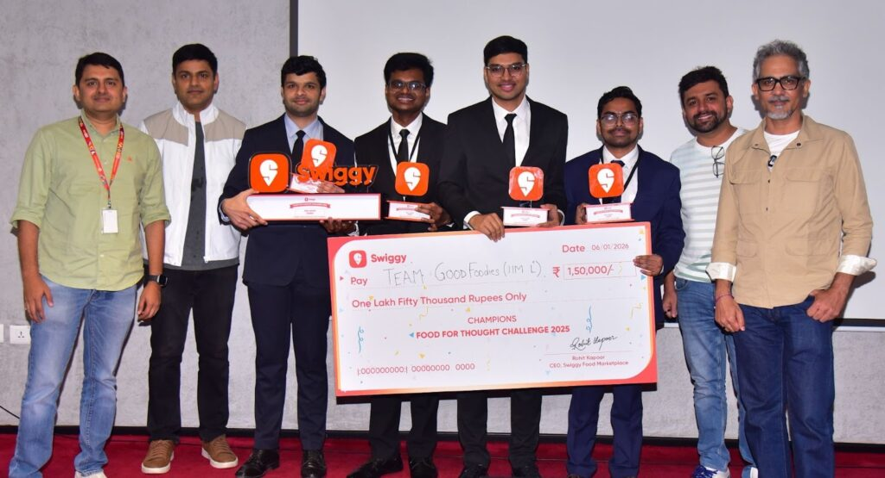
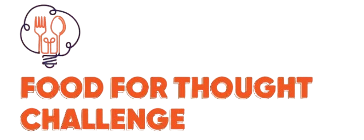
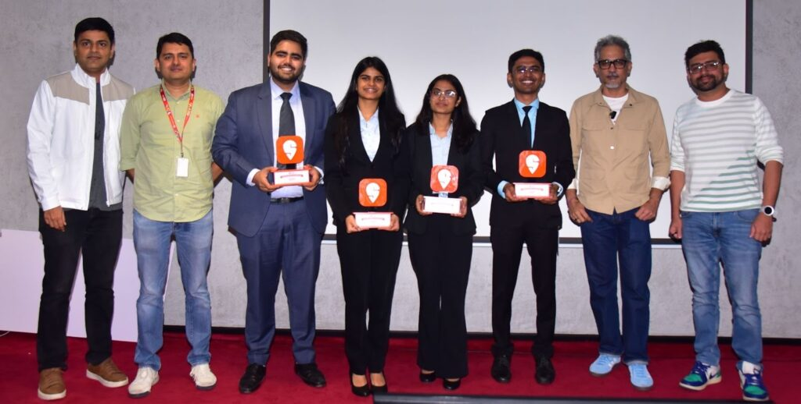

NATIONAL WINNER / 2025
IIM Lucknow
₹1,50,000 + pre-placement interviews

Registration deadline:
for the winning team
in prizes
at eligible colleges in India
for finalists
Food for Thought 2.0 invites students to solve a real business problem using insights from their own campus. Build a portfolio-worthy case, explore how Swiggy Food, Dineout and Instamart serve student needs, gain exposure to Swiggy’s business teams and leadership, and compete for cash rewards and a pre-placement interview opportunity.
College life is evolving, but many student needs around food, dining, and consumption remain underserved.
Identify an unmet student need, validate it on campus, and propose a solution that delivers value to students and creates a sustainable business opportunity for Swiggy.
Your solution could be a new product, feature, service, partnership, experience, operational solution, or AI-powered intervention, with a clear link to Swiggy’s core ecosystem..
Solutions should ideally address opportunities connected to one or more of the following:
Ideas that require Swiggy to enter completely unrelated categories with no natural link to its existing ecosystem or capabilities should be avoided.
Submissions will be evaluated across two components:
The business case will be evaluated on the strength of the insight, quality of the proposed solution, business impact, feasibility and scalability.
The prototype will be evaluated on how effectively the team brings the proposed solution to working experience, demonstrates the core user journey and leverages the available Swiggy MCP capabilities.
Teams will submit a presentation of up to 5 slides covering:
Each submission must include at least one form of campus-level validation, such as:
Teams should highlight the key insight from their research and explain how it influenced the proposed solution.
Teams must submit a short video walkthrough of a functional or simulated prototype (preferably a webapp) that demonstrates how their proposed solution would work in practice.
The prototype should bring the proposed business case to life- it is not a separate idea.
Teams should demonstrate:
Submission Format: A video walkthrough of the prototype, clearly showing the key use case and user journey.
Any prototype or material submitted as part of the competition must not be published, showcased, or shared on any public platform by participants without prior approval from Swiggy. Any such publication or showcase will be subject to applicable internal reviews and approvals from Swiggy.
No. All 2–4 members must belong to the same college. Students from all batches and disciplines at eligible colleges in India may participate, but each student may join only one team. Team members cannot change after registration closes.
Yes. Every participant must register for Student Rewards. This prerequisite is separate from registering the team for Food for Thought 2.0.
Registration closes on . The remaining proposed schedule has submissions due on , the result of Round 1 on , and the national finale on . These remaining dates are subject to confirmation; the finale location will be announced.
Register your team using the Food for Thought 2.0 registration form. Every participant must also register for Student Rewards; this is a separate prerequisite. Platform-specific case submission instructions will be announced.

₹1,50,000 + pre-placement interviews

₹50,000 cash prize
Cash rewards, career opportunities
and DineCash for student teams.
Cash prizes + a pre-placement interview opportunity with Swiggy.
Cash prize for the first runner-up team.
DineCash per team.
₹1,00,000 across the top 50.
DineCash per student.
Registration deadline:
Submission, Round 1 result and finale dates remain subject to confirmation.
All participants must register for Swiggy Student Rewards. Complete this prerequisite using the official link.
Register for Student RewardsForm your team of 2–4 students from the same college, then complete the Food for Thought 2.0 registration form.
Register your team Student Rewards registration does not register your team for the competition.From 2,600+ submissions to eight semi-finalist teams and four finalists in Bengaluru. Campus thinking made it all the way to the boardroom.
Your team could